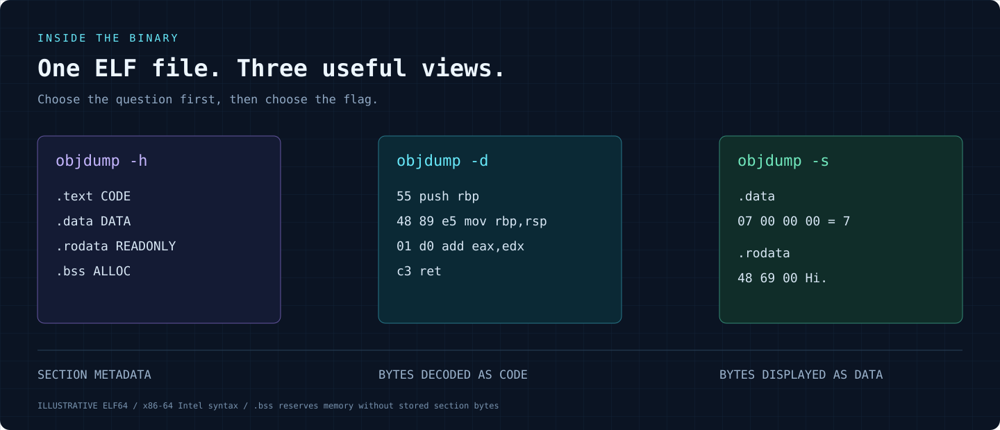

objdump: disassembler & section dumper
Read what a compiler puts inside an ELF file. Start with an 11-line C program, learn how to read every part of the output, and keep a complete generic and x86 flag reference close by.

What does objdump do?
GNU objdump inspects object files, executables, shared libraries, and archives. Two especially useful views are disassembly, which decodes machine bytes as assembly, and section dumps, which show raw bytes and metadata. It reads the file; it does not run the program.
Use it when you want to answer a concrete question:
- What code did the compiler emit? Start with
-d, then focus on a function. - Where are the code, initialized globals, and strings? Use
-hand-s -j SECTION. - Why is an instruction's target unresolved in a .o? Look at
-ror-dr. - Which symbols are available? Compare
-twith-Ton an appropriate linked object. - How does a source line map to instructions? Use
-Sand suitable debug information.
It complements other tools: a debugger inspects a running process, a profiler measures behavior over time, and readelf specializes in ELF metadata. An assembly listing alone does not tell you which path ran or how many cycles it took.
Scope of “all flags.” The reference below covers all generic option families in the inspected GNU objdump help, documented conditional features, every listed DWARF selector, and x86 decoder settings. The baseline is 2.47.20260726, an identified development snapshot. Other releases and architecture builds differ; use objdump --help and objdump -i to check your installation. This is GNU objdump, not llvm-objdump.
Start with an 11-line C program
Save this as objdump-demo.c. It adds two integers; the globals give us something easy to find in the data sections.
int counter = 7;
const char message[] = "Hi";
int scratch;
int add(int a, int b) {
return a + b;
}
int main(void) {
return add(counter, 5);
}
counterstarts at 7 and normally belongs to initialized writable data.messagecontainsH,i, and a terminating zero byte, normally in read-only data.scratchhas static storage duration and is zero-initialized, commonly using.bss.add(7, 5)returns 12.mainreturns that value; it prints no text.
Build on Linux
Use GCC and GNU Binutils. These commands produce an unlinked object and a separate executable:
gcc -g -O0 -fno-inline -c objdump-demo.c -o demo.o
gcc -g -O0 -fPIE -pie objdump-demo.c -o demo
./demo
printf 'exit=%d\n' "$?"Expected shell output:
exit=12-g records debug information, -O0 keeps optimization low for teaching, -fno-inline helps preserve the call in the object, and -c stops before linking. -fPIE -pie explicitly chooses a PIE executable. The displayed exit=12 is printed by the shell's printf, not by the C program. Compiler optimizations can rearrange or remove instructions even when debug information exists. [1]
Reproduce the exact listings in this article
The command outputs below were captured with an ELF-capable GNU objdump against the downloadable original teaching object. Its hand-authored x86-64 instructions implement the same C logic; it is not claimed to be GCC output. It has normal ELF symbols and relocations, but no DWARF. Your own demo.o can have a different layout and extra sections.
Download reference ELF object · Captured command output
The Linux program was not run on the authoring host. The inspection listings are real objdump captures; the shell result above is the expected result of the C code. You can replace objdump-reference.o with your demo.o in any relevant command.
Find your bearings: file and section headers
Identify the file with -f
objdump -f objdump-reference.oCaptured output
objdump-reference.o: file format elf64-x86-64
architecture: i386:x86-64, flags 0x00000011:
HAS_RELOC, HAS_SYMS
start address 0x0000000000000000elf64-x86-64: an ELF64 container for x86-64.i386:x86-64: BFD's machine-family name; it does not mean this is 32-bit code.flags 0x00000011: BFD's object-summary bitmask. The following names explain the set bits: the object has relocations and symbols. This is not the ELF header'se_flagsfield.start address 0: this relocatable object has no runnable process entry point. A .o file is input to the linker.
Understand every column in -h
objdump -h objdump-reference.oCaptured output
objdump-reference.o: file format elf64-x86-64
Sections:
Idx Name Size VMA LMA File off Algn
0 .text 0000002c 0000000000000000 0000000000000000 00000040 2**0
CONTENTS, ALLOC, LOAD, RELOC, READONLY, CODE
1 .data 00000004 0000000000000000 0000000000000000 0000006c 2**2
CONTENTS, ALLOC, LOAD, DATA
2 .bss 00000004 0000000000000000 0000000000000000 00000070 2**2
ALLOC
3 .rodata 00000003 0000000000000000 0000000000000000 00000070 2**0
CONTENTS, ALLOC, LOAD, READONLY, DATA- Idx and Name
- The displayed section index and section name. These BFD display indices need not match the raw ELF section-header indices reported by another tool.
- Size
- Hexadecimal byte count.
.text = 0x2cmeans 44 bytes;.data = 4,.bss = 4, and.rodata = 3. - VMA
- The section's virtual-memory address in this file's address model. These zero-based, unlinked sections have not been assigned final runtime locations.
- LMA
- The load-memory address represented by BFD. It is often equal to VMA for ordinary Linux objects. It is not a physical RAM address.
- File off
- Where file-backed section contents begin on disk. The fixture's .text begins at
0x40; .data begins at0x6c. - Algn
- Alignment expressed as a power of two.
2**2means 4-byte alignment;2**0means 1-byte alignment.
The flags underneath each row also matter: CONTENTS means stored section bytes exist, ALLOC means runtime memory is needed, LOAD marks file-backed loadable contents in this BFD view, RELOC means relocation records apply, READONLY means the section is marked read-only, CODE identifies instructions, and DATA identifies data. These are descriptive section attributes; this command is not a dump of ELF PT_LOAD program headers.
The .bss clue: it has size 4 but no CONTENTS flag. Its displayed disk offset equals .rodata's offset because .bss consumes no initialized section bytes in the file. Do not read four bytes there and call them scratch's initial value.
See the RVA and ELF address guide for the distinction between a link-time ELF address, a runtime VA, and a file offset.
Read assembly without getting lost
objdump -d -M intel --disassemble=add objdump-reference.oCaptured output
objdump-reference.o: file format elf64-x86-64
Disassembly of section .text:
0000000000000000 <add>:
0: 55 push rbp
1: 48 89 e5 mov rbp,rsp
4: 89 7d fc mov DWORD PTR [rbp-0x4],edi
7: 89 75 f8 mov DWORD PTR [rbp-0x8],esi
a: 8b 55 fc mov edx,DWORD PTR [rbp-0x4]
d: 8b 45 f8 mov eax,DWORD PTR [rbp-0x8]
10: 01 d0 add eax,edx
12: 5d pop rbp
13: c3 ret-d selects code disassembly, -M intel selects Intel syntax, and --disassemble=add narrows the listing to one function. Intel syntax normally places the destination before the source.
Understand the listing's three columns
offset machine bytes decoded instruction
10: 01 d0 add eax,edx10:is hexadecimal0x10, an offset in this object's zero-based .text section. It is not decimal ten or disk file offset 0x10.01 d0is the two-byte machine encoding.add eax,edxadds edx into eax.0000000000000000 <add>:names the symbol beginning at section-relative address zero.
Every instruction in add
For this System V x86-64 integer call, the first two int arguments arrive in edi and esi, and the int result is returned in eax. These register roles come from the calling convention, not from variable names stored in the instruction bytes. [2]
0: push rbpsaves the caller's frame-pointer value.1: mov rbp,rspestablishes this example's stack frame.4: mov DWORD PTR [rbp-0x4],edistores the first argument a in a 4-byte stack slot.7: mov DWORD PTR [rbp-0x8],esistores the second argument b in another 4-byte slot.a: mov edx,DWORD PTR [rbp-0x4]loads a into edx. The address label a is hex 0xa, not the C variable name.d: mov eax,DWORD PTR [rbp-0x8]loads b into eax.10: add eax,edxcomputes b + a in eax, the return register.12: pop rbprestores the caller's frame pointer.13: retreturns to the caller using the return address on the stack.
DWORD PTR specifies a 4-byte memory operand. rbp and rsp are 64-bit pointer registers; edi, esi, edx, and eax are 32-bit register views. This leaf function uses the ABI's red-zone space below rsp for its temporary stack slots, so it does not need a separate sub rsp,... allocation.
AT&T is the same code in a different notation
objdump -d --disassemble=add objdump-reference.oCaptured output
objdump-reference.o: file format elf64-x86-64
Disassembly of section .text:
0000000000000000 <add>:
0: 55 push %rbp
1: 48 89 e5 mov %rsp,%rbp
4: 89 7d fc mov %edi,-0x4(%rbp)
7: 89 75 f8 mov %esi,-0x8(%rbp)
a: 8b 55 fc mov -0x4(%rbp),%edx
d: 8b 45 f8 mov -0x8(%rbp),%eax
10: 01 d0 add %edx,%eax
12: 5d pop %rbp
13: c3 retRead mov %rsp,%rbp as source rsp to destination rbp. The percent signs mark registers, and mov %edi,-0x4(%rbp) writes to memory at rbp minus four. The left-hand offsets and machine encodings match the Intel listing; only the assembly notation differs.
Why -D can mislead you
objdump -D -M intel -j .data objdump-reference.oCaptured output
objdump-reference.o: file format elf64-x86-64
Disassembly of section .data:
0000000000000000 <counter>:
0: 07 (bad)
1: 00 00 add BYTE PTR [rax],al
...This is the integer 7 decoded as though it were instructions. 07 is not a valid ordinary instruction in this x86-64 context, hence (bad). The following zero bytes happen to decode as add BYTE PTR [rax],al. The ellipsis indicates skipped zero data. Neither line establishes that the compiler intended .data to execute. Start with -d; use -D when the extra decoding is intentional.
Dump sections: integers and strings
Initialized integer data
objdump -s -j .data objdump-reference.oCaptured output
objdump-reference.o: file format elf64-x86-64
Contents of section .data:
0000 07000000 ....0000 is the position in the section's address coordinate. 07000000 is four bytes printed in file order: 07 00 00 00. On little-endian x86-64, those four bytes encode the integer 7. The ASCII column shows four dots because these bytes are not printable text.
Read-only string data
objdump -s -j .rodata objdump-reference.oCaptured output
objdump-reference.o: file format elf64-x86-64
Contents of section .rodata:
0000 486900 Hi.48 is ASCII H, 69 is i, and 00 is the C string terminator. The display Hi. uses a dot for the zero byte; the dot is not a literal character in the stored string. The section is three bytes long, matching the section table.
Why dumping .bss shows no bytes
objdump -s -j .bss objdump-reference.oCaptured output
objdump-reference.o: file format elf64-x86-64
Contents of section .bss:
0000 00000000 ....Only the file-format heading is printed. This is not a missing value: .bss reserves zero-initialized memory without storing four initialized bytes for scratch in the file.
Connect a section address to the file
objdump -d -F -M intel --disassemble=add objdump-reference.oCaptured output
objdump-reference.o: file format elf64-x86-64
Disassembly of section .text:
0000000000000000 <add> (File Offset: 0x40):
0: 55 push rbp
1: 48 89 e5 mov rbp,rsp
4: 89 7d fc mov DWORD PTR [rbp-0x4],edi
7: 89 75 f8 mov DWORD PTR [rbp-0x8],esi
a: 8b 55 fc mov edx,DWORD PTR [rbp-0x4]
d: 8b 45 f8 mov eax,DWORD PTR [rbp-0x8]
10: 01 d0 add eax,edx
12: 5d pop rbp
13: c3 retFile Offset: 0x40 matches .text's File off value. In this simple relocatable section, the instruction at .text offset 0x10 starts at disk offset 0x40 + 0x10 = 0x50. The -F annotation appears at regions or symbols, not beside every instruction.
Find names, types, and sizes
objdump -t objdump-reference.oCaptured output
objdump-reference.o: file format elf64-x86-64
SYMBOL TABLE:
0000000000000000 l df *ABS* 0000000000000000 objdump-demo.c
0000000000000000 l d .text 0000000000000000 .text
0000000000000000 l d .data 0000000000000000 .data
0000000000000000 l d .bss 0000000000000000 .bss
0000000000000000 l d .rodata 0000000000000000 .rodata
0000000000000000 g O .data 0000000000000004 counter
0000000000000000 g O .rodata 0000000000000003 message
0000000000000000 g O .bss 0000000000000004 scratch
0000000000000000 g F .text 0000000000000014 add
0000000000000014 g F .text 0000000000000018 mainThe beginning of each row is the symbol value. For the defined symbols in this relocatable ELF, that value is an offset within the named section. The characters and remaining fields explain the symbol:
lis local andgis global binding.dmarks a debugging/section-style symbol in the local section rows;dfmarks the file metadata row.Omarks an object, whileFmarks a function..data,.rodata,.bss, and.textidentify the symbol's section.*ABS*marks an absolute symbol such as the file metadata entry;*UND*, when present, means an undefined reference.- The size before the name is hexadecimal: counter is 4 bytes, message is 3, scratch is 4, add is
0x14 = 20, and main is0x18 = 24. - main starts at .text offset
0x14, immediately after the 20-byte add function. Their combined code size is0x2c = 44. - Several globals have value zero because each begins at the start of its own section. That does not give them the same final runtime address.
C++ names: use -C to demangle
A separate one-line C++ example is enough:
int add(int a, int b) { return a + b; }g++ -O0 -c objdump-name.cpp -o name.o
objdump -t name.o
objdump -t -C name.oSelected rows captured from the companion name fixture:
0000000000000000 g F .text 0000000000000014 _Z3addii
0000000000000000 g F .text 0000000000000014 add(int, int)_Z3addii encodes add with two int parameters in the common GNU C++ ABI naming scheme. -C displays add(int, int). It changes the printed name, not the code, binding, size, or address.
Download objdump-name.cpp · Download companion ELF name fixture
Why .o files have unfinished addresses
objdump -r objdump-reference.oCaptured output
objdump-reference.o: file format elf64-x86-64
RELOCATION RECORDS FOR [.text]:
OFFSET TYPE VALUE
000000000000001a R_X86_64_PC32 counter-0x0000000000000004
0000000000000026 R_X86_64_PLT32 add-0x0000000000000004- OFFSET
- The location of a relocation field within .text. It need not equal the address of the instruction's first byte.
- TYPE
R_X86_64_PC32requests a signed 32-bit PC-relative fixup;R_X86_64_PLT32is the corresponding call/PLT-oriented relocation kind. A final link can resolve a local call directly without retaining a PLT indirection.- VALUE
- The referenced symbol with its addend: counter minus four and add minus four. This is relocation metadata, not a request to subtract four from the C variable's value.
Put the fixups beside the instructions with -dr
objdump -dr -M intel objdump-reference.oCaptured excerpt: main (add was decoded above)
0000000000000014 <main>:
14: 55 push rbp
15: 48 89 e5 mov rbp,rsp
18: 8b 05 00 00 00 00 mov eax,DWORD PTR [rip+0x0] # 1e <main+0xa>
1a: R_X86_64_PC32 counter-0x4
1e: be 05 00 00 00 mov esi,0x5
23: 89 c7 mov edi,eax
25: e8 00 00 00 00 call 2a <main+0x16>
26: R_X86_64_PLT32 add-0x4
2a: 5d pop rbp
2b: c3 ret14: push rbpand15: mov rbp,rspset up main's frame.18: mov eax,DWORD PTR [rip+0x0]is a load with an unpatched displacement. The relocation at0x1aidentifies counter as the real symbolic target.1e: mov esi,0x5passes 5 as add's second integer argument.23: mov edi,eaxpasses the loaded counter as its first argument.25: call 2a <main+0x16>contains a zero displacement placeholder. The relocation at0x26says to resolve add. The displayed next-instruction target is not the final intended call target.2a: pop rbprestores the frame pointer.2b: retreturns add's result, already in eax, as main's result.
The -4 addend compensates for the difference between the relocation field and the next-instruction reference point used by this four-byte x86 displacement. Inspect relocations before interpreting an unresolved object-file call literally.
Source and debug information
Run these commands on your GCC-produced demo.o, built with -g:
objdump -S -M intel --disassemble=add demo.o
objdump -dl -M intel --disassemble=add demo.o
objdump --dwarf=decodedline demo.o
objdump --dwarf=info demo.o- -S: C statements can appear among instructions. This needs suitable debug mappings and accessible source text; a binary is not a copy of the original C program.
- -dl: file/line labels are added to the disassembly when the metadata permits.
- decodedline: rows associate file names and source lines with code addresses. A row is not a separate CPU instruction.
- info: DWARF records describe compilation units, functions, variables, and types. Tags name record kinds; attributes supply values; metadata offsets are not necessarily code addresses.
Our reference object intentionally has no DWARF, so -S still decodes instructions without recovering C statements, and --dwarf=info has no debug entries to show. Missing metadata is different from missing code. A stripped file or an inaccessible build-source path can also prevent source interleaving.
Symbols are not dynamic symbols
To inspect a shared library of the same simple source on Linux:
gcc -g -O0 -fPIC -shared objdump-demo.c -o libdemo.so
objdump -T libdemo.so
objdump -R libdemo.so
objdump -p libdemo.so-T selects symbols available in the dynamic symbol table; -R selects dynamic relocations; -p adds ELF-specific linked-object details. Their contents depend on the linker and runtime. The ordinary reference .o is not a dynamic object:
objdump -T objdump-reference.oCaptured output
objdump-reference.o: file format elf64-x86-64
DYNAMIC SYMBOL TABLE:
no symbols
objdump: objdump-reference.o: not a dynamic objectno symbols here means no dynamic symbols, not no ordinary symbols: -t already showed those. The not-a-dynamic-object diagnostic explains the input mismatch. The tool's absolute path has been shortened to objdump in this display.
Useful command recipes
Options are case-sensitive: -d differs from -D, -s from -S, -r from -R, and -w from -W. Most short options can be combined, but start with a small command and add one concern at a time.
One function, readable syntax
objdump -d -M intel --disassemble=add demo.oExpected: one function's instructions and machine bytes. Find the label, then read address, bytes, and instruction.
Code and unresolved targets together
objdump -dr -M intel demo.oExpected: instructions with relocation annotations near the fields they will patch. Consult the symbol/addend, not just a placeholder call target.
Only the bytes in one section
objdump -s -j .rodata demo.oExpected: raw hex groups and printable ASCII. This is useful for identifying strings, constants, and terminators.
A compact instruction-only view
objdump -d -M intel --no-show-raw-insn --disassemble=add demo.oExpected: the same instructions without the encoding column. Add --no-addresses when comparing only instruction text.
A known address interval
objdump -d -M intel --start-address=0x0 --stop-address=0x14 objdump-reference.oExpected for the reference fixture: add's instructions from 0 through 0x13. The stop bound is exclusive. With several sections sharing zero-based VMAs, also select the intended section using -j .text.
Inspect an archive
ar rcs libdemo.a demo.o
objdump -a libdemo.aExpected: archive-member headers and the member's object format. This is archive structure, not a runtime memory map.
Decode raw instruction bytes
objcopy -O binary -j .text demo.o text.bin
objdump -D -b binary -m i386:x86-64 -M intel text.binExpected: code bytes decoded with the explicitly selected architecture. Raw input has lost ELF symbols, section metadata, and relocation records; unresolved fields remain unresolved. A raw file's zero origin is not automatically a real runtime VA.
Complete generic and x86 flag reference
Search by option, task, section, or output term. Each expandable entry includes a usage example, the expected kind of output, and how to read it. Entries describe the selected option's effect; they do not claim that every optional metadata section exists in the tiny example.
demo.o and demo refer to the earlier GCC build; libdemo.so and libdemo.a use the library commands above. name.o is the one-line C++ example. raw.bin, TARGET, and custom debug/CTF names are explicit placeholders for appropriate inputs.
Some switches only change a listing produced by another option. A modifier such as -M, -j, or -C is not by itself a request to display a report. Conditional CTF, SFrame, debuginfod, legacy debug, and target-specific features depend on the installed build.
107 reference entries
Inspection
-a / --archive-headers
objdump -a libdemo.aExpected output: Archive member names, ownership, sizes, timestamps, and object-format headings.
How to read it: These describe members of the archive, not functions. Deterministic archives may use zero timestamps.
-f / --file-headers
objdump -f demo.oExpected output: A format name, architecture, BFD flags, and start address.
How to read it: Identify the object kind first. A relocatable object normally has no runnable entry point.
-p / --private-headers
objdump -p demoExpected output: ELF program-header and dynamic-linking details when present.
How to read it: Read LOAD entries as segment mappings. A relocatable .o has no executable program-header layout.
-P OPT / --private=OPT
objdump -P header demo.oExpected output: An unsupported-option diagnostic or no applicable format-specific information for ELF.
How to read it: This format-specific facility is not implemented for ELF; -p is the useful ELF choice. Other object formats define their own OPT values.
-h / --section-headers / --headers
objdump -h demo.oExpected output: Section names, sizes, VMA, LMA, disk offsets, alignment, and flags.
How to read it: Sizes and addresses are hexadecimal. These are sections, not the PT_LOAD segments displayed by readelf -l.
-x / --all-headers
objdump -x demoExpected output: A combined metadata report including headers, symbols, and relocations where available.
How to read it: It combines several inspection modes. It does not mean all disassembly or all DWARF records.
-s / --full-contents
objdump -s -j .rodata demo.oExpected output: Address-labelled hexadecimal bytes with an ASCII column.
How to read it: The bytes are data. Four printed bytes are not automatically one integer or one instruction.
-Z / --decompress
objdump -s -Z -j .debug_info demo.oExpected output: Uncompressed section bytes when the input section is compressed.
How to read it: This changes inspection, not the file on disk. Compression support depends on how Binutils was built.
-t / --syms
objdump -t demo.oExpected output: The ordinary symbol table with values, bindings, types, sections, sizes, and names.
How to read it: g/F means a global function; O denotes an object. In a relocatable ELF, defined symbol values are relative to their sections.
-T / --dynamic-syms
objdump -T libdemo.soExpected output: Dynamic symbols, often including visibility/version information.
How to read it: This is the dynamic linker's symbol view, not every local symbol. On an ordinary .o, a not-a-dynamic-object diagnostic is expected.
-r / --reloc
objdump -r demo.oExpected output: Relocation offsets, relocation types, and referenced symbols/addends.
How to read it: Offsets identify fields to fix. Add -d to place records beside the affected instructions.
-R / --dynamic-reloc
objdump -R libdemo.soExpected output: Dynamic relocation entries when the object has them.
How to read it: These describe runtime-linker fixups, unlike the ordinary relocations of an unlinked .o. Use readelf for RELR data.
Disassembly
-d / --disassemble
objdump -d demo.oExpected output: Instructions from sections identified as code.
How to read it: Use this first. Symbol boundaries and section classification guide decoding.
--disassemble=SYMBOL / -dSYMBOL
objdump -d --disassemble=add demo.oExpected output: Disassembly focused on the named symbol.
How to read it: Use the exact stored name. For a mangled C++ function, obtain it from -t rather than guessing its demangled spelling.
-D / --disassemble-all
objdump -D -j .data demo.oExpected output: A best-effort instruction decoding of the selected data section.
How to read it: Valid-looking instructions do not prove the bytes are code. -D also changes how symbol boundaries constrain decoding.
-j NAME / --section=NAME
objdump -s -j .data -j .rodata demo.oExpected output: Only the named sections appear in the selected output mode.
How to read it: Repeat -j to keep more than one section. Combine it with an action such as -s, -d, or -h.
-M OPT / --disassembler-options=OPT
objdump -d -M intel demo.oExpected output: Assembly rendered with the requested target-specific options.
How to read it: The options after -M are decoder suboptions, not standalone objdump flags. The x86 options are listed separately below.
-m MACHINE / --architecture=MACHINE
objdump -D -b binary -m i386:x86-64 text.binExpected output: Raw bytes decoded using the specified machine model.
How to read it: Required when raw input has no architecture metadata. The wrong machine can produce plausible but wrong instructions.
-b BFDNAME / --target=BFDNAME
objdump -D -b binary -m i386:x86-64 text.binExpected output: Input interpreted as the requested BFD object format.
How to read it: binary means raw bytes, while elf64-x86-64 means an ELF container. Check supported names with -i.
-EB / --endian=big
objdump -D -b binary -m TARGET --endian=big raw.binExpected output: Disassembly using a supported target's big-endian interpretation.
How to read it: Replace TARGET with a suitable architecture. This is not a byte-reversal switch and is not meaningful for x86's fixed little-endian instructions.
-EL / --endian=little
objdump -D -b binary -m TARGET --endian=little raw.binExpected output: Disassembly using a supported target's little-endian interpretation.
How to read it: Useful for formats that omit byte-order metadata. It affects decoding, not stored file bytes.
-z / --disassemble-zeroes
objdump -d -z demo.oExpected output: Zero runs are decoded rather than replaced with an ellipsis.
How to read it: More output is not necessarily more code; alignment padding and data can contain zero bytes.
--start-address=ADDR
objdump -d --start-address=0x14 demo.oExpected output: Instructions at or above the chosen address.
How to read it: Addresses are in the object's disassembly coordinate, not disk byte offsets. In our .text fixture, main starts at 0x14.
--stop-address=ADDR
objdump -d --stop-address=0x14 demo.oExpected output: Instructions before the exclusive stop address.
How to read it: The pair [0,0x14) selects the fixture's add function. Prefer a symbol filter when addresses are not known.
--adjust-vma=OFFSET
objdump -d --adjust-vma=0x1000 demo.oExpected output: Displayed addresses shifted by OFFSET.
How to read it: A reporting adjustment does not relocate a running program, apply link fixups, or modify the ELF.
Presentation
-F / --file-offsets
objdump -d -F --disassemble=add demo.oExpected output: Extra file-offset annotations at displayed regions/symbols.
How to read it: The annotation connects disassembly to original disk bytes; it is not an offset column on every instruction line.
--no-addresses
objdump -d --no-addresses --no-show-raw-insn demo.oExpected output: A listing with address fields suppressed.
How to read it: Useful for comparing instruction text across builds; it removes context rather than changing decoding.
--prefix-addresses
objdump -d --prefix-addresses demo.oExpected output: A full address-style prefix on instruction lines.
How to read it: This older listing style changes layout. It normally suppresses raw bytes unless --show-raw-insn is added.
--show-raw-insn
objdump -d --prefix-addresses --show-raw-insn demo.oExpected output: Instruction encodings appear alongside the assembly.
How to read it: Bytes such as 55 are machine encodings; they are not separate source statements.
--no-show-raw-insn
objdump -d --no-show-raw-insn demo.oExpected output: Assembly without the machine-byte column.
How to read it: Useful for a compact reading view. Keep bytes when diagnosing instruction length or an encoding problem.
--insn-width=WIDTH
objdump -d --insn-width=12 demo.oExpected output: A raw-byte field sized for WIDTH bytes per output line.
How to read it: This controls wrapping; it does not force the CPU instruction length to WIDTH.
--show-all-symbols
objdump -d --show-all-symbols demo.oExpected output: All symbol labels sharing a displayed address.
How to read it: Aliases can name the same location. Multiple labels do not imply multiple instruction copies.
--special-syms
objdump -t --special-syms demo.oExpected output: Target-special symbols are included if available.
How to read it: Some targets use mapping or marker symbols. The simple x86 fixture may not show an additional special symbol.
-C / --demangle[=STYLE]
objdump -t -C name.oExpected output: C++ encodings become names such as add(int, int).
How to read it: Name presentation changes; the machine code and symbol addresses stay the same. STYLE selects a supported naming convention.
--recurse-limit / --recursion-limit
objdump -t -C --recurse-limit name.oExpected output: Demangling with the recursion guard enabled.
How to read it: Normal output is unchanged; the guard limits pathological nested symbol decoding.
--no-recurse-limit / --no-recursion-limit
objdump -t -C --no-recurse-limit name.oExpected output: Demangling without that recursion-depth guard.
How to read it: Relevant only to extremely nested names. It can exhaust stack resources, so keep the default for ordinary inspection.
-w / --wide
objdump -h -w demo.oExpected output: Wide fields are less likely to wrap or truncate.
How to read it: Helpful when symbol names or section rows exceed a traditional terminal width.
-U METHOD / --unicode=METHOD
objdump -t --unicode=escape demo.oExpected output: Non-ASCII names are displayed according to METHOD.
How to read it: Methods are default, locale, invalid, hex, escape, and highlight; the effect concerns text display, not machine-code decoding.
--visualize-jumps[=MODE]
objdump -d --visualize-jumps=off demo.oExpected output: With visualization enabled, local branch arcs appear beside instructions.
How to read it: Modes are the bare option, color, extended-color, or off. Straight-line add has no branch arcs to draw.
--disassembler-color=MODE
objdump -d --disassembler-color=off demo.oExpected output: Instruction text gains or loses terminal color sequences.
How to read it: Modes include off, terminal, on/color/colour, and extended/extended-color/extended-colour. This does not add semantic execution information.
Source
-S / --source
objdump -S demo.oExpected output: Source statements mixed into the disassembly when debug mappings and source are available.
How to read it: Implies -d. Missing source lines do not prove missing machine code; the reference fixture intentionally has no DWARF.
--source-comment[=TEXT]
objdump -S --source-comment=SRC: demo.oExpected output: Interleaved source lines receive the chosen prefix.
How to read it: This distinguishes C text from instructions; with no TEXT, the usual marker is a hash followed by a space.
-l / --line-numbers
objdump -dl demo.oExpected output: File and line labels near disassembly or relocation entries.
How to read it: Requires suitable debug information and a relevant action such as -d or -r.
--inlines
objdump -dl --inlines demo.oExpected output: Inline call-site chains are shown when recorded in the debug data.
How to read it: At -O0 the tiny program may have no inlined frames; optimized code can map one address to several source contexts.
--file-start-context
objdump -S --file-start-context demo.oExpected output: The first displayed source context can extend to the start of that file.
How to read it: It changes the amount of source shown, not which instructions execute.
-I DIR / --include=DIR
objdump -S -I ./src demo.oExpected output: Source lookup also searches DIR.
How to read it: This helps objdump find files while rendering output; it does not add a compiler include path to a build.
--prefix=PREFIX
objdump -S --prefix=/checkout demo.oExpected output: Recorded absolute source paths are remapped under PREFIX.
How to read it: Useful when a binary was built elsewhere. It does not edit the paths stored in the ELF.
--prefix-strip=LEVEL
objdump -S --prefix=/checkout --prefix-strip=2 demo.oExpected output: Initial components are stripped before adding the source prefix.
How to read it: Only meaningful with --prefix. Use it to match the current source-tree layout.
Debug metadata
-W / --dwarf
objdump --dwarf demo.oExpected output: Available DWARF sections are decoded into records.
How to read it: Potentially a very large report. Choose one subtype below when you only need line numbers or unwind rules.
-Wa / --dwarf=abbrev
objdump --dwarf=abbrev demo.oExpected output: Abbreviation entries listing DWARF tags and attribute forms.
How to read it: These are templates used to decode debug entries, not the values of your C variables.
-WA / --dwarf=addr
objdump --dwarf=addr demo.oExpected output: Entries from the DWARF address table.
How to read it: Other debug records can reference these indexed addresses. No table means no matching output.
-Wr / --dwarf=aranges
objdump --dwarf=aranges demo.oExpected output: Address ranges associated with compilation units.
How to read it: Use the ranges to identify which compilation unit describes a code address.
-Wc / --dwarf=cu_index
objdump --dwarf=cu_index demo.oExpected output: Compilation-unit or type-unit index contents.
How to read it: Mainly useful with indexed or split debug packages; a basic object may have no index.
-WL / --dwarf=decodedline
objdump --dwarf=decodedline demo.oExpected output: Decoded file/line/address associations.
How to read it: Read each row as a source location associated with a code address. Optimized mappings can be many-to-many.
-Wl / --dwarf=rawline
objdump --dwarf=rawline demo.oExpected output: Line-table headers and line-program operations.
How to read it: This is the encoding behind decodedline, not assembly instructions executed by the CPU.
-Wf / --dwarf=frames
objdump --dwarf=frames demo.oExpected output: Raw frame-description and call-frame instruction records.
How to read it: These describe how to recover caller state; they are not a live process stack trace.
-WF / --dwarf=frames-interp
objdump --dwarf=frames-interp demo.oExpected output: Unwind rules rendered in a more tabular interpreted form.
How to read it: Track the canonical frame address and saved-register rules across instruction ranges.
-Wg / --dwarf=gdb_index
objdump --dwarf=gdb_index demo.oExpected output: Debug-name or GDB index data when present.
How to read it: An index speeds symbol/debug lookup; it is not the function's machine code.
-Wi / --dwarf=info
objdump --dwarf=info demo.oExpected output: Debug Information Entries with tags, attributes, names, and offsets.
How to read it: DW_TAG_subprogram describes a function; DW_AT_name names it. Offset fields locate metadata records, not necessarily machine instructions.
-Wo / --dwarf=loc
objdump --dwarf=loc demo.oExpected output: Location lists describing where variables can be found over address ranges.
How to read it: A variable can move between registers and memory or be unavailable in optimized code.
-Wm / --dwarf=macro
objdump --dwarf=macro demo.oExpected output: Macro definitions and macro-import records when emitted.
How to read it: Build with suitable macro debug information, such as GCC -g3; ordinary -g need not record all macros.
-Wp / --dwarf=pubnames
objdump --dwarf=pubnames demo.oExpected output: Public-name index entries when present.
How to read it: These help map names to debug records. They are not the same table as objdump -T.
-Wt / --dwarf=pubtypes
objdump --dwarf=pubtypes demo.oExpected output: Public-type index entries when present.
How to read it: Entries point to type metadata; newer compiler configurations may omit these indexes.
-WR / --dwarf=Ranges
objdump --dwarf=Ranges demo.oExpected output: DWARF range-list records.
How to read it: The uppercase R matters. A function can occupy several disjoint ranges after optimization.
-Ws / --dwarf=str
objdump --dwarf=str demo.oExpected output: String-bearing debug sections and their offsets.
How to read it: Offsets select strings referenced by other DWARF records, not runtime C string addresses.
-WO / --dwarf=str-offsets
objdump --dwarf=str-offsets demo.oExpected output: The string-offset table used by indexed debug forms.
How to read it: An entry is an indexable offset into debug strings, not a pointer to the target process.
-Wu / --dwarf=trace_abbrev
objdump --dwarf=trace_abbrev demo.oExpected output: Abbreviation data from trace-related debug sections if present.
How to read it: This is specialized metadata. An ordinary GCC object often contains none.
-WT / --dwarf=trace_aranges
objdump --dwarf=trace_aranges demo.oExpected output: Trace-related address-range metadata if present.
How to read it: Do not interpret absence as a missing function or a failed disassembly.
-WU / --dwarf=trace_info
objdump --dwarf=trace_info demo.oExpected output: Trace-related debug records when present.
How to read it: It is not a recording of instructions executed by your program.
-Wk / --dwarf=links
objdump --dwarf=links demo.oExpected output: References to separate debug files and related link metadata.
How to read it: A debuglink names another metadata file; it is not a function call or an ELF shared-library dependency.
-WK / --dwarf=follow-links
objdump --dwarf=info --dwarf=follow-links demo.oExpected output: Requested debug data can also come from linked debug files.
How to read it: Defaults depend on the build. When network debug lookup is enabled, this may consult configured debuginfod services.
-WN / --dwarf=no-follow-links
objdump --dwarf=info --dwarf=no-follow-links demo.oExpected output: Only local requested debug data is used, without following debug-file links.
How to read it: Useful when you want a self-contained view of the input's own metadata.
-WD / --dwarf=use-debuginfod
objdump --dwarf=info --dwarf=use-debuginfod demo.oExpected output: Missing separate debug information may be fetched through configured debuginfod services.
How to read it: Conditional on build support and server configuration. This enables lookup; it does not create debug information.
-WE / --dwarf=do-not-use-debuginfod
objdump --dwarf=info --dwarf=do-not-use-debuginfod demo.oExpected output: Debug inspection proceeds without debuginfod network lookup.
How to read it: Build support and option availability vary; this is distinct from disabling all local debug links.
--dwarf-depth=N
objdump --dwarf=info --dwarf-depth=2 demo.oExpected output: Deeply nested debug entries are omitted.
How to read it: Depth zero means no depth limit. This changes metadata verbosity, not machine-code recursion.
--dwarf-start=N
objdump --dwarf=info --dwarf-start=0x20 demo.oExpected output: The debug-entry dump begins at the selected offset.
How to read it: Use an actual entry offset from the debug report. An arbitrary byte inside an entry is not a meaningful starting point.
--dwarf-check
objdump --dwarf=info --dwarf-check demo.oExpected output: Additional consistency diagnostics may accompany the debug dump.
How to read it: No diagnostic is not a proof that every byte of the ELF is valid.
--debug-dir=DIR
objdump --dwarf=info --debug-dir=./debug demo.oExpected output: Separate debug-file lookup additionally searches DIR.
How to read it: This locates debug metadata files, unlike -I, which searches source-text paths.
--map-global-vars
objdump --map-global-vars demo.oExpected output: Global-variable location/type information derived from supported DWARF records.
How to read it: Requires suitable debug entries. The reference fixture contains symbols but no DWARF, so it has no such variable map.
-L / --process-links
objdump -h -L demo.oExpected output: Selected non-debug information from linked separate debug files can also be processed.
How to read it: Implies following debug links. It is not a request to print every section from every library dependency.
-g / --debugging
objdump -g demo.oExpected output: Debug information decoded through the supported legacy debugging path.
How to read it: For a DWARF-focused task, prefer an explicit --dwarf subtype. Results depend on debug format and build support.
-e / --debugging-tags
objdump -e demo.oExpected output: Supported debug information is formatted in a tags-oriented style.
How to read it: A specialized legacy/debug view; it does not promise C source reconstruction.
-G / --stabs
objdump -G demo.oExpected output: STABS debug-section records if the file has them.
How to read it: Modern Linux builds usually use DWARF, so no STABS output is normal.
--ctf[=SECTION]
objdump --ctf demo.oExpected output: Compact C Type Format type dictionaries from the selected section, usually .ctf.
How to read it: Type records describe types, not instructions. Requires CTF-bearing input and corresponding tool support.
--ctf-parent=MEMBER
objdump --ctf --ctf-parent=.ctf demo.oExpected output: CTF child dictionaries are resolved using the named parent archive member.
How to read it: Useful for CTF archives with a nondefault parent; not a general ELF parent-process option.
--ctf-parent-section=SECTION
objdump --ctf --ctf-parent-section=.ctf_parent demo.oExpected output: The CTF parent dictionary is read from another section.
How to read it: A specialized documented option for unusual CTF layouts; availability can vary with version.
--sframe[=SECTION]
objdump --sframe demo.oExpected output: SFrame unwind metadata from the selected section, normally .sframe.
How to read it: Needs SFrame data and tool support. Like DWARF frame records, it is unwind metadata rather than a live backtrace.
Utilities
-i / --info
objdump -iExpected output: Supported object-format and machine names plus compatibility information.
How to read it: Use these exact names with -b and -m. A host tool does not necessarily support every target architecture.
-v / -V / --version
objdump --versionExpected output: Tool identity, version, build annotation, and license text.
How to read it: Record the version with a reproducible report. A development snapshot may include a date after the release number.
-H / --help
objdump --helpExpected output: The options and target-specific decoder settings supported by this build.
How to read it: This is the final authority for flags available on your installed executable.
@FILE
objdump @options.txt demo.oExpected output: Options are loaded from the response file before normal inspection.
How to read it: Put options such as -d and -M intel in options.txt. The response file is not a shell script.
x86 decoder
-M intel
objdump -d -M intel demo.oExpected output: Intel-style operands such as mov rbp,rsp.
How to read it: Destination comes first. This does not change the instruction bytes.
-M att
objdump -d -M att demo.oExpected output: AT&T-style operands such as mov %rsp,%rbp.
How to read it: Source comes first; register names have percent prefixes and immediates commonly use a dollar prefix.
-M x86-64
objdump -D -b binary -m i386 -M x86-64 text.binExpected output: Bytes are decoded in 64-bit x86 mode.
How to read it: A raw-byte mode selection, not proof that the input really contains x86-64 code.
-M i386
objdump -D -b binary -m i386 -M i386 text.binExpected output: Bytes are decoded in 32-bit x86 mode.
How to read it: Using it on a 64-bit byte stream can change instruction boundaries and register interpretation.
-M i8086
objdump -D -b binary -m i386 -M i8086 text.binExpected output: Bytes are decoded in 16-bit x86 mode.
How to read it: Select it for an appropriate raw code image, not as a way to convert a 64-bit ELF into a 16-bit program.
-M intel-mnemonic
objdump -d -M intel-mnemonic demo.oExpected output: Intel-oriented mnemonic naming is selected.
How to read it: This suboption can also imply Intel syntax; use -M intel for the usual beginner-friendly setting.
-M att-mnemonic
objdump -d -M att-mnemonic demo.oExpected output: AT&T-oriented mnemonic naming is selected.
How to read it: This is a mnemonic/syntax presentation choice rather than another instruction set.
-M addr64
objdump -d -M intel,addr64 demo.oExpected output: A 64-bit default address-size interpretation is requested.
How to read it: Mode options and encoded prefixes can override defaults. It does not resize the input file's addresses.
-M addr32
objdump -d -M intel,addr32 demo.oExpected output: A 32-bit default address-size interpretation is requested.
How to read it: For specialist raw decoding; choose the real execution mode rather than using it to make a listing look smaller.
-M addr16
objdump -D -b binary -m i386 -M i8086,addr16 text.binExpected output: A 16-bit default address-size interpretation is requested.
How to read it: Address size concerns effective-address calculation, distinct from the operand's data width.
-M data32
objdump -d -M att,data32 demo.oExpected output: A 32-bit default operand-size interpretation is requested.
How to read it: A default does not erase explicit size prefixes or the effects of the selected execution mode.
-M data16
objdump -D -b binary -m i386 -M i8086,data16 text.binExpected output: A 16-bit default operand-size interpretation is requested.
How to read it: Use for the relevant raw-code context. It is not a conversion of 32-bit variables into 16-bit values.
-M suffix
objdump -d -M att,suffix demo.oExpected output: Mnemonic size suffixes are printed more explicitly when supported.
How to read it: For example a suffix can distinguish byte, word, long, and quadword forms; support varies with syntax.
-M amd64
objdump -d -M intel,amd64 demo.oExpected output: The AMD64 ISA interpretation is selected for relevant encodings.
How to read it: An ISA-selection aid, not a performance analyzer for AMD processors.
-M intel64
objdump -d -M intel,intel64 demo.oExpected output: The Intel64 ISA interpretation is selected for relevant encodings.
How to read it: Most ordinary instructions look the same; some overlapping encodings depend on the selected ISA.
-M annotate-immediates
objdump -d -M intel,annotate-immediates demoExpected output: Immediate values can gain matching symbol annotations.
How to read it: Useful for linked executables/shared objects; the relocatable fixture is not the intended input for this feature.
Display-mode values worth recognizing
--unicode=default gives UTF-8 no special treatment; locale uses the locale's display; hex and invalid expose byte sequences; escape uses Unicode escapes; highlight emphasizes escapes where terminal colors are supported.
Jump visualization supports an uncolored default and color, extended-color, or off. Disassembler coloring uses off, terminal, on (also color/colour), or extended (also extended-color/extended-colour). These change presentation, not program behavior.
For x86 -M, comma-separate suboptions, for example -M intel,x86-64. Execution-mode selectors can override earlier operand/address-size defaults. Other architectures have their own -M vocabularies; inspect that target build's help rather than applying x86 values to it.
Common mistakes that lead to wrong conclusions
- Expecting source recovery: assembly plus debug annotations is not the original source. Comments, names, and high-level structure may be absent.
- Confusing sections with segments:
objdump -hlists sections;readelf -llists program segments. They answer different questions. [3] - Reading every printed address as a live VA: an unlinked .o, a PIE ELF, and a live process use different coordinate contexts. A raw byte offset is yet another coordinate.
- Using -D output as proof of code: constants and strings can decode to plausible instructions. Section classification, control flow, symbols, and context matter.
- Believing unrelocated call targets: read -r/-dr before trusting placeholder displacements in an object.
- Confusing -t and -T: ordinary symbols and dynamic symbols are different tables. A stripped executable can lack one while retaining the other.
- Looking for stored bytes in .bss: a nonzero memory size does not imply initialized bytes in the file.
- Assuming -x means everything: it combines header-related views, not every possible source, DWARF, and instruction report.
- Assuming all x86 code looks like the teaching listing: optimization can inline add, remove the frame, use lea instead of add, or eliminate a calculation. Compiler, target, and security settings can add instructions too.
- Ignoring the installed build: raw-file decoders, debug formats, optional decompression libraries, and flags can differ between distributions and versions.
A short inspection workflow
- Identify the container and machine using
-f. - Inspect the section layout with
-h. - Find a function with
-t, then inspect it with-d. - Add
-rif the file contains unresolved references. - Use
-s -j SECTIONfor stored data, or-Swhen source mappings are available. - Use a debugger or profiler for questions about actual execution.
References and scope
- GCC debugging options - generating debug information and understanding optimized code.
- System V x86-64 psABI - calling conventions, register roles, and ELF relocation definitions.
- GNU readelf documentation - complementary ELF inspection.
- GNU objdump documentation - canonical option semantics and target-specific extensions.
The reference catalogue was checked against local GNU objdump 2.47.20260726 help and the documented option set. Numeric listings marked captured are real inspection results from the supplied ELF teaching fixtures. Linux build commands, optional-metadata results, and the C program's exit status are guidance for reproducing the exercises; Linux compilation/execution was not available on the authoring host. The fixture bytes and diagrams are original educational material.